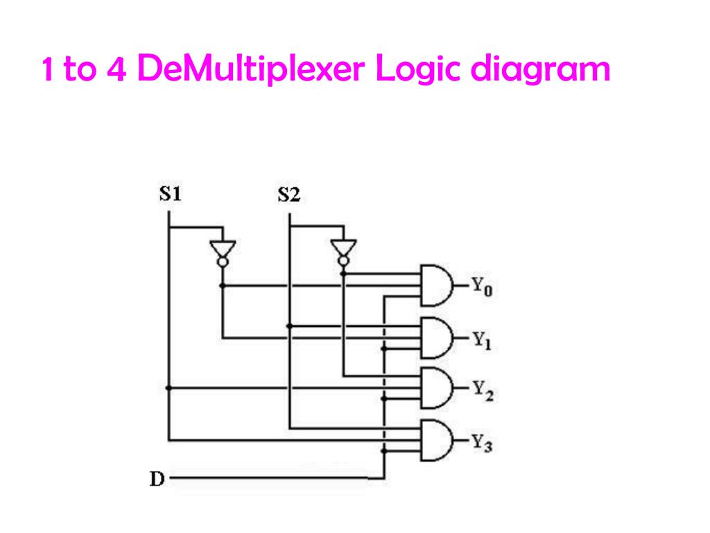
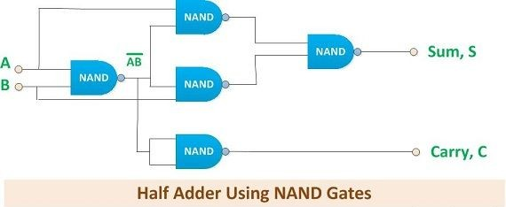
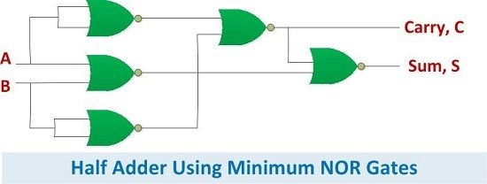
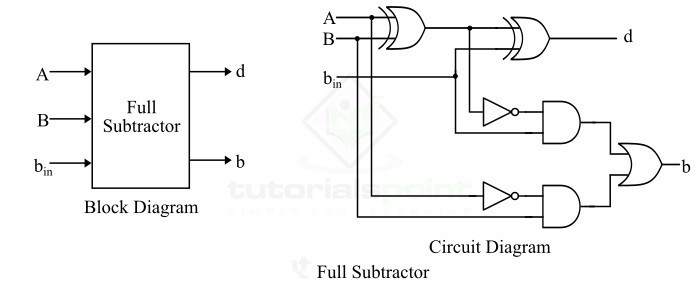
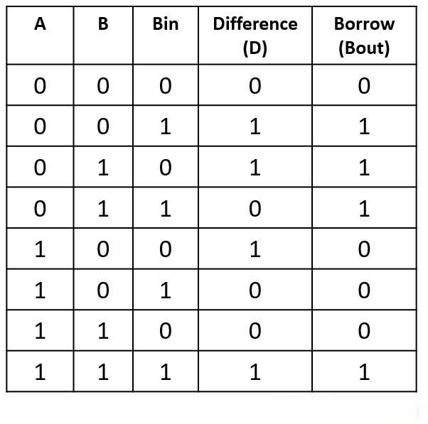
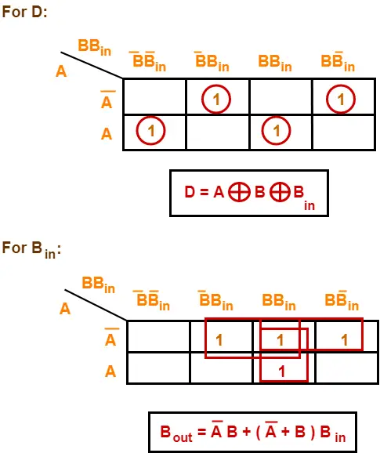

Overview of Combinational Circuits
Combinational logic circuits are digital circuits where the output at any instant is determined solely by the present combination of input values. They do not have memory elements, so their past input history does not affect their current output.
Characteristics:
- Outputs are a direct function of the current inputs.
- No feedback paths from output to input (acyclic).
- No memory elements like flip-flops are used.
- Typically constructed from basic logic gates (AND, OR, NOT) or universal gates (NAND, NOR).
- Used for tasks like data selection, routing, code conversion, and arithmetic operations.
This section will cover the design and analysis of several key combinational circuits.
Multiplexers (MUX)
A Multiplexer (MUX), often called a data selector, means "many into one." It is a circuit used to select and route any one of several input signals to a single output line. The selection of a particular input line is controlled by a set of selection (or control) inputs.

General Block Diagram of a Multiplexer (N inputs, M control lines, 1 output, where N = 2M).
4-to-1 Multiplexer
A 4-to-1 multiplexer has 4 data input lines (A, B, C, D), 2 control/select lines (a, b), and 1 output line (Q). The control lines determine which of the four inputs is transmitted to the output.
- The output Q depends on the value of the control input
ab. - When
ab = 00, input A is selected (Y=A). - When
ab = 01, input B is selected (Y=B). - When
ab = 10, input C is selected (Y=C). - When
ab = 11, input D is selected (Y=D).
Boolean Expression for a 4:1 MUX: Q = a'b'A + a'bB + ab'C + abD
NAND Gate Implementation

4:1 MUX using NAND gates, with truth table and switch analogy.
AND-OR Gate Implementation

4:1 MUX using AND, OR, and NOT gates.
Applications of Multiplexers:
- Data Selection/Routing: Selecting one data source from multiple sources.
- Parallel-to-Serial Conversion: Converting parallel data into a serial stream.
- Logic Function Implementation: A MUX can implement any Boolean function of n variables (using an n-to-1 MUX with select lines as variables and data inputs tied to 0, 1, or other variables).
- Communication systems (e.g., telephone networks)
- Computer memory addressing
- Transmission from computer systems (e.g., satellite)
- Data bus control
Demultiplexers (DEMUX)
A Demultiplexer (DEMUX) means "one into many." It is a circuit with one input data line and multiple output lines. It routes the single input signal to one of the many output lines, based on the value of the control/select inputs.

General Block Diagram of a Demultiplexer (1 input, M control lines, N outputs, where N = 2M).
1-to-4 Demultiplexer
A 1-to-4 demultiplexer has 1 input data line (F), 2 control/select lines (a, b), and 4 output lines (A, B, C, D). The control lines determine to which output line the input F is routed. The unselected output lines remain at a default state (usually 0).
The Boolean expressions for the outputs are (assuming common input F):
- A = a'b'F
- B = a'bF
- C = ab'F
- D = abF
The image shows F = a'b'A + a'bB + ab'C + abD, which is the expression for a MUX. For a DEMUX with input F and outputs Y0, Y1, Y2, Y3: Y0 = S1'S0'·F, Y1 = S1'S0·F, Y2 = S1S0'·F, Y3 = S1S0·F. Let's use the provided image's logic for the circuit diagram shown.
Switch Analogy & Truth Table

1:4 Demux switch analogy and truth table for selected output.
Logic Gate Implementation
1:4 Demultiplexer using AND and NOT gates.
Applications of Demultiplexers:
- Data Distribution: Sending a single data stream to one of multiple destinations.
- Serial-to-Parallel Conversion: Converting a serial data stream into parallel data.
- Decoder Implementation: A demultiplexer with a constant HIGH input acts as a decoder.
Decoders
A Decoder is a combinational logic circuit that converts coded inputs (e.g., binary) into coded outputs, where the input and output codes are different. Typically, a decoder has N input lines to handle N bits and 2N output lines to indicate the presence of one specific N-bit input combination.
- A decoder circuit would often use AND gates because the output of an AND gate is "High" (1) only when all its inputs are "High." Such an output is called an "active high output."
- If NAND gates are used instead of AND gates, the selected output will be "Low" (0) only when all its inputs are "High." This is called an "active low output."

General Block Diagram of a Decoder.
2-to-4 Decoder
A 2-to-4 decoder has 2 input lines (A, B) and 4 output lines (Q0, Q1, Q2, Q3). For each binary input combination, only one output line is active (typically HIGH).
Block Diagram & Truth Table

2:4 Decoder Block Diagram and Truth Table (Active HIGH outputs).
Logic Gate Implementation

2:4 Decoder using AND and NOT gates.
Applications of Decoders:
- Memory Address Decoding: Selecting a specific memory location.
- Data Demultiplexing: A decoder with an enable input can function as a demultiplexer.
- Display Driving: Such as driving a 7-segment display (e.g., BCD to 7-segment decoder).
- Instruction decoding in CPUs.
Encoders
An Encoder is a combinational logic circuit that performs the inverse operation of a decoder. It converts information from one format or code to another. It has 2N (or fewer) input lines and N output lines. Typically, only one input line is active at a time, and the encoder produces an N-bit binary code corresponding to the active input.
- The purpose of an encoder is standardization, security, or saving space by shrinking size.
- Encoders accept one or more inputs and generate a multibit output code.

General Block Diagram of an Encoder.
Priority Encoders
A standard encoder assumes only one input is active. If multiple inputs can be active, a Priority Encoder is used. It selects the active input with the highest priority (usually predetermined) and outputs its corresponding binary code.
4-to-2 Priority Encoder Example:
Assumes D3 has the highest priority, D0 the lowest. 'x' denotes "don't care". A 'Valid' output (V) indicates if any input is active.

4:2 Priority Encoder (Often includes a 'Valid' output bit, not shown in this specific table).
Digital Encoder using Logic Gates (8-to-3 Encoder)

An 8-to-3 encoder implemented with OR gates (assumes one-hot input).
Applications of Encoders:
- Keyboard Encoding: Converting key presses into binary codes.
- Data Compression: Representing a larger set of inputs with a smaller set of outputs.
- Interrupt handling in microprocessors (priority encoders).
- Speed synchronization of multiple motors.
- Robotic vehicle with metal detector.
- RF based home automation.
- Automatic wireless health monitoring.
- Ships navigation.
Adders
Adders are fundamental combinational circuits used for performing arithmetic addition of binary numbers.
Half Adder
A Half Adder is an arithmetic circuit used to perform the addition of two single bits. It has two inputs (A, B) and two outputs: Sum (S) and Carry (C).
- Boolean Expression for Sum:
S = A'B + AB' = A ⊕ B - Boolean Expression for Carry:
C = AB
Block Diagram & Truth Table

Half Adder Block Diagram and Truth Table.
Logic Diagram

Half Adder using XOR and AND gates.
Half Adder Implementations:
Using 2x4 Decoder

Using NAND Gates
Using NOR Gates
Full Adder
A Full Adder is a combinational circuit that performs the arithmetic sum of three input bits: two significant bits (A, B) and a carry-in bit (Cin) from a previous less significant stage. It produces two outputs: Sum (S) and Carry-out (Cout).
- Boolean Expression for Sum:
S = A ⊕ B ⊕ Cin = A'B'Cin + A'BC'in + AB'C'in + ABCin(Σm(1,2,4,7)) - Boolean Expression for Carry-out:
Cout = AB + ACin + BCin = AB + Cin(A ⊕ B)(Σm(3,5,6,7))
Block Diagram & Truth Table

Full Adder Block Diagram and Truth Table.
K-Maps

K-Maps for Full Adder Sum and Carry.
Full Adder Implementations:
Logic Diagram (SOP and using Two Half Adders)

Full Adder: (a) SOP form, (b) Using two Half Adders and an OR gate.
Using 3x8 Decoder

Using NAND Gates

Using NOR Gates

Subtractors
Subtractors are combinational circuits that perform binary subtraction.
Half Subtractor
A Half Subtractor is a circuit that subtracts one bit (subtrahend B) from another bit (minuend A) and produces two outputs: Difference (D) and Borrow (Bout).
- Boolean Expression for Difference:
D = A'B + AB' = A ⊕ B - Boolean Expression for Borrow:
Bout = A'B
Block Diagram & Truth Table

Half Subtractor Block Diagram, Truth Table, and Logic Diagram.
Half Subtractor Implementations:
Using 2x4 Decoder

Using NAND Gates

Using NOR Gates

Full Subtractor
A Full Subtractor is a combinational circuit that performs subtraction involving three bits: minuend (A), subtrahend (B), and borrow-in (Bin) from a previous stage. It produces two outputs: Difference (D) and Borrow-out (Bout).
- Difference:
D = A ⊕ B ⊕ Bin - Borrow-out:
Bout = A'B + A'Bin + BBin
Block & Circuit Diagram
Full Subtractor Block and Example Circuit Diagram.
Truth Table
Full Subtractor Truth Table.
K-Maps for Full Subtractor
K-Maps for Full Subtractor Difference (d) and Borrow (b).
A full subtractor can also be implemented using two half subtractors and an OR gate, similar to how a full adder is made from half adders.
Other Combinational Circuits
Binary Comparators
A Binary Comparator is a combinational circuit that compares two binary numbers (A and B) and determines their relative magnitudes. The outputs typically indicate whether A > B, A = B, or A < B.
For example, a 1-bit comparator takes two bits A and B as input.
- A = B output (EQU):
(A XNOR B)orA'B' + AB - A > B output (GT):
AB' - A < B output (LT):
A'B
Multi-bit comparators can be built by cascading 1-bit comparators or designed directly.
Parity Generators and Checkers
Parity is a simple error detection scheme. A parity bit is added to a binary message to make the total number of 1s either even (even parity) or odd (odd parity).
- A Parity Generator is a circuit that takes an N-bit data word and generates the (N+1)th bit, the parity bit. For even parity, it's the XOR sum of all data bits. For odd parity, it's the XNOR sum (or NOT of XOR sum) of all data bits.
- A Parity Checker is a circuit that takes an (N+1)-bit word (data + parity bit) and checks if the parity is correct. It usually outputs a 1 if an error is detected. For even parity checking, it's the XOR sum of all N+1 bits.
XOR gates are fundamental to parity circuits because of their property: the output of a series of XOR gates is 1 if an odd number of inputs are 1, and 0 if an even number of inputs are 1.
Interactive MUX Simulator (2-to-1)
Simulate a 2-to-1 Multiplexer. Output Q = S'·I0 + S·I1